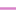

<!doctype html>
<html lang="en">
    <head>
        <meta charset="utf-8">
        <meta http-equiv="X-UA-Compatible" content="IE=edge">
        <meta name="viewport" content="initial-scale=1,user-scalable=no,maximum-scale=1,width=device-width">
        <meta name="mobile-web-app-capable" content="yes">
        <meta name="apple-mobile-web-app-capable" content="yes">
        <link rel="stylesheet" href="css/leaflet.css"><link rel="stylesheet" href="css/L.Control.Locate.min.css">
        <link rel="stylesheet" href="css/qgis2web.css"><link rel="stylesheet" href="css/fontawesome-all.min.css">
        <link rel="stylesheet" href="css/leaflet-search.css">
        <link rel="stylesheet" href="css/leaflet-control-geocoder.Geocoder.css">
        <link rel="stylesheet" href="css/leaflet-measure.css">
        <style>
        html, body, #map {
            width: 100%;
            height: 100%;
            padding: 0;
            margin: 0;
        }
        </style>
        <title></title>
    </head>
    <body>
        <div id="map">
        </div>
        <script src="js/qgis2web_expressions.js"></script>
        <script src="js/leaflet.js"></script><script src="js/L.Control.Locate.min.js"></script>
        <script src="js/leaflet.rotatedMarker.js"></script>
        <script src="js/leaflet.pattern.js"></script>
        <script src="js/leaflet-hash.js"></script>
        <script src="js/Autolinker.min.js"></script>
        <script src="js/rbush.min.js"></script>
        <script src="js/labelgun.min.js"></script>
        <script src="js/labels.js"></script>
        <script src="js/leaflet-control-geocoder.Geocoder.js"></script>
        <script src="js/leaflet-measure.js"></script>
        <script src="js/leaflet-search.js"></script>
        <script src="data/Shape_Path_2.js"></script>
        <script src="data/AssessmentStops_3.js"></script>
        <script>
        var map = L.map('map', {
            zoomControl:true, maxZoom:20, minZoom:2
        })
        var hash = new L.Hash(map);
        map.attributionControl.setPrefix('<a href="https://github.com/tomchadwin/qgis2web" target="_blank">qgis2web</a> &middot; <a href="https://leafletjs.com" title="A JS library for interactive maps">Leaflet</a> &middot; <a href="https://qgis.org">QGIS</a>');
        var autolinker = new Autolinker({truncate: {length: 30, location: 'smart'}});
        L.control.locate({locateOptions: {maxZoom: 19}}).addTo(map);
        var measureControl = new L.Control.Measure({
            position: 'topleft',
            primaryLengthUnit: 'meters',
            secondaryLengthUnit: 'kilometers',
            primaryAreaUnit: 'sqmeters',
            secondaryAreaUnit: 'hectares'
        });
        measureControl.addTo(map);
        document.getElementsByClassName('leaflet-control-measure-toggle')[0]
        .innerHTML = '';
        document.getElementsByClassName('leaflet-control-measure-toggle')[0]
        .className += ' fas fa-ruler';
        var bounds_group = new L.featureGroup([]);
        function setBounds() {
            if (bounds_group.getLayers().length) {
                map.fitBounds(bounds_group.getBounds());
            }
        }
        map.createPane('pane_CartoLight_0');
        map.getPane('pane_CartoLight_0').style.zIndex = 400;
        var layer_CartoLight_0 = L.tileLayer('http://a.basemaps.cartocdn.com/light_all/{z}/{x}/{y}.pn', {
            pane: 'pane_CartoLight_0',
            opacity: 1.0,
            attribution: '',
            minZoom: 2,
            maxZoom: 20,
            minNativeZoom: 0,
            maxNativeZoom: 22
        });
        layer_CartoLight_0;
        map.addLayer(layer_CartoLight_0);
        map.createPane('pane_CartoDark_1');
        map.getPane('pane_CartoDark_1').style.zIndex = 401;
        var layer_CartoDark_1 = L.tileLayer('http://a.basemaps.cartocdn.com/dark_all/{z}/{x}/{y}.png', {
            pane: 'pane_CartoDark_1',
            opacity: 1.0,
            attribution: '',
            minZoom: 2,
            maxZoom: 20,
            minNativeZoom: 0,
            maxNativeZoom: 22
        });
        layer_CartoDark_1;
        map.addLayer(layer_CartoDark_1);
        function pop_Shape_Path_2(feature, layer) {
            var popupContent = '<table>\
                    <tr>\
                        <th scope="row">shape_id</th>\
                        <td>' + (feature.properties['shape_id'] !== null ? autolinker.link(feature.properties['shape_id'].toLocaleString()) : '') + '</td>\
                    </tr>\
                    <tr>\
                        <th scope="row">begin</th>\
                        <td>' + (feature.properties['begin'] !== null ? autolinker.link(feature.properties['begin'].toLocaleString()) : '') + '</td>\
                    </tr>\
                    <tr>\
                        <th scope="row">end</th>\
                        <td>' + (feature.properties['end'] !== null ? autolinker.link(feature.properties['end'].toLocaleString()) : '') + '</td>\
                    </tr>\
                    <tr>\
                        <th scope="row">Road_ID</th>\
                        <td>' + (feature.properties['Road_ID'] !== null ? autolinker.link(feature.properties['Road_ID'].toLocaleString()) : '') + '</td>\
                    </tr>\
                    <tr>\
                        <th scope="row">Road_type</th>\
                        <td>' + (feature.properties['Road_type'] !== null ? autolinker.link(feature.properties['Road_type'].toLocaleString()) : '') + '</td>\
                    </tr>\
                </table>';
            layer.bindPopup(popupContent, {maxHeight: 400});
        }

        function style_Shape_Path_2_0(feature) {
            switch(String(feature.properties['Road_type'])) {
                case '1':
                    return {
                pane: 'pane_Shape_Path_2',
                opacity: 1,
                color: 'rgba(255,174,0,1.0)',
                dashArray: '',
                lineCap: 'square',
                lineJoin: 'bevel',
                weight: 3.0,
                fillOpacity: 0,
                interactive: true,
            }
                    break;
                case '2':
                    return {
                pane: 'pane_Shape_Path_2',
                opacity: 1,
                color: 'rgba(18,191,191,1.0)',
                dashArray: '',
                lineCap: 'square',
                lineJoin: 'bevel',
                weight: 3.0,
                fillOpacity: 0,
                interactive: true,
            }
                    break;
                default:
                    return {
                pane: 'pane_Shape_Path_2',
                opacity: 1,
                color: 'rgba(217,129,200,1.0)',
                dashArray: '',
                lineCap: 'square',
                lineJoin: 'bevel',
                weight: 1.0,
                fillOpacity: 0,
                interactive: true,
            }
                    break;
            }
        }
        map.createPane('pane_Shape_Path_2');
        map.getPane('pane_Shape_Path_2').style.zIndex = 402;
        map.getPane('pane_Shape_Path_2').style['mix-blend-mode'] = 'normal';
        var layer_Shape_Path_2 = new L.geoJson(json_Shape_Path_2, {
            attribution: '',
            interactive: true,
            dataVar: 'json_Shape_Path_2',
            layerName: 'layer_Shape_Path_2',
            pane: 'pane_Shape_Path_2',
            onEachFeature: pop_Shape_Path_2,
            style: style_Shape_Path_2_0,
        });
        bounds_group.addLayer(layer_Shape_Path_2);
        map.addLayer(layer_Shape_Path_2);
        function pop_AssessmentStops_3(feature, layer) {
            var popupContent = '<table>\
                    <tr>\
                        <th scope="row">stop_name</th>\
                        <td>' + (feature.properties['stop_name'] !== null ? autolinker.link(feature.properties['stop_name'].toLocaleString()) : '') + '</td>\
                    </tr>\
                    <tr>\
                        <th scope="row">stop_lat</th>\
                        <td>' + (feature.properties['stop_lat'] !== null ? autolinker.link(feature.properties['stop_lat'].toLocaleString()) : '') + '</td>\
                    </tr>\
                    <tr>\
                        <th scope="row">stop_lon</th>\
                        <td>' + (feature.properties['stop_lon'] !== null ? autolinker.link(feature.properties['stop_lon'].toLocaleString()) : '') + '</td>\
                    </tr>\
                </table>';
            layer.bindPopup(popupContent, {maxHeight: 400});
        }

        function style_AssessmentStops_3_0() {
            return {
                pane: 'pane_AssessmentStops_3',
                radius: 5.200000000000001,
                opacity: 1,
                color: 'rgba(164,84,186,1.0)',
                dashArray: '',
                lineCap: 'butt',
                lineJoin: 'miter',
                weight: 2.0,
                fill: true,
                fillOpacity: 1,
                fillColor: 'rgba(242,125,191,1.0)',
                interactive: true,
            }
        }
        map.createPane('pane_AssessmentStops_3');
        map.getPane('pane_AssessmentStops_3').style.zIndex = 403;
        map.getPane('pane_AssessmentStops_3').style['mix-blend-mode'] = 'normal';
        var layer_AssessmentStops_3 = new L.geoJson(json_AssessmentStops_3, {
            attribution: '',
            interactive: true,
            dataVar: 'json_AssessmentStops_3',
            layerName: 'layer_AssessmentStops_3',
            pane: 'pane_AssessmentStops_3',
            onEachFeature: pop_AssessmentStops_3,
            pointToLayer: function (feature, latlng) {
                var context = {
                    feature: feature,
                    variables: {}
                };
                return L.circleMarker(latlng, style_AssessmentStops_3_0(feature));
            },
        });
        bounds_group.addLayer(layer_AssessmentStops_3);
        map.addLayer(layer_AssessmentStops_3);
        var osmGeocoder = new L.Control.Geocoder({
            collapsed: true,
            position: 'topleft',
            text: 'Search',
            title: 'Testing'
        }).addTo(map);
        document.getElementsByClassName('leaflet-control-geocoder-icon')[0]
        .className += ' fa fa-search';
        document.getElementsByClassName('leaflet-control-geocoder-icon')[0]
        .title += 'Search for a place';
        var baseMaps = {};
        L.control.layers(baseMaps,{' Assessment-Stops': layer_AssessmentStops_3,'Shape_Path<br /><table><tr><td style="text-align: center;"></td><td>1</td></tr><tr><td style="text-align: center;"></td><td>2</td></tr><tr><td style="text-align: center;"></td><td></td></tr></table>': layer_Shape_Path_2,"Carto Dark": layer_CartoDark_1,"Carto Light": layer_CartoLight_0,}).addTo(map);
        map.on("zoomend", function(){

                if (map.hasLayer(layer_Shape_Path_2)) {
                    if (map.getZoom() <= 15 && map.getZoom() >= 19) {
                        layer_Shape_Path_2.eachLayer(function (layer) {
                            layer.openTooltip();
                        });
                    } else {
                        layer_Shape_Path_2.eachLayer(function (layer) {
                            layer.closeTooltip();
                        });
                    }
                }
        });
        setBounds();
        var i = 0;
        layer_Shape_Path_2.eachLayer(function(layer) {
            var context = {
                feature: layer.feature,
                variables: {}
            };
            layer.bindTooltip((layer.feature.properties['shape_id'] !== null?String('<div style="color: #000000; font-size: 10pt; font-family: \'Fira Sans Medium\', sans-serif;">' + layer.feature.properties['shape_id']) + '</div>':''), {permanent: true, offset: [-0, -16], className: 'css_Shape_Path_2'});
            labels.push(layer);
            totalMarkers += 1;
              layer.added = true;
              addLabel(layer, i);
              i++;
        });
                if (map.hasLayer(layer_Shape_Path_2)) {
                    if (map.getZoom() <= 15 && map.getZoom() >= 19) {
                        layer_Shape_Path_2.eachLayer(function (layer) {
                            layer.openTooltip();
                        });
                    } else {
                        layer_Shape_Path_2.eachLayer(function (layer) {
                            layer.closeTooltip();
                        });
                    }
                }
        map.addControl(new L.Control.Search({
            layer: layer_Shape_Path_2,
            initial: false,
            hideMarkerOnCollapse: true,
            propertyName: 'Road_ID'}));
        document.getElementsByClassName('search-button')[0].className +=
         ' fa fa-binoculars';
        resetLabels([layer_Shape_Path_2]);
        map.on("zoomend", function(){
            resetLabels([layer_Shape_Path_2]);
        });
        map.on("layeradd", function(){
            resetLabels([layer_Shape_Path_2]);
        });
        map.on("layerremove", function(){
            resetLabels([layer_Shape_Path_2]);
        });
        </script>
    </body>
</html>
